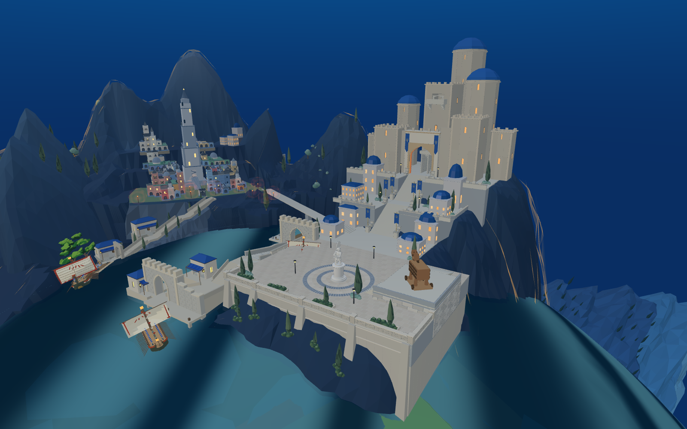
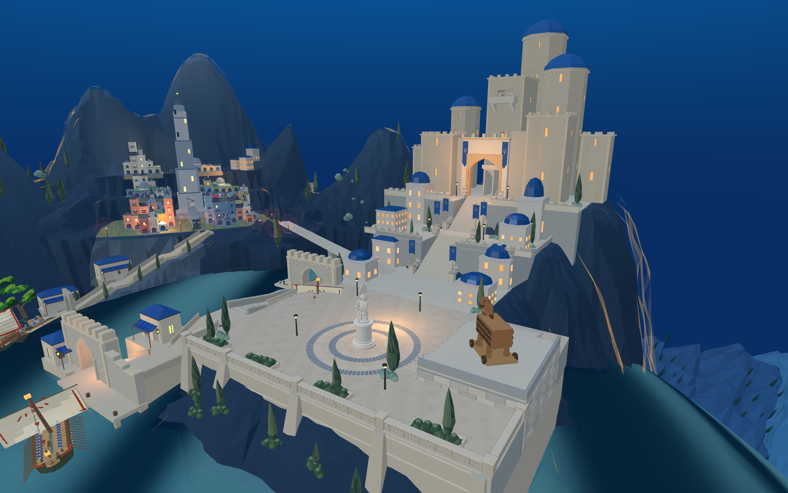

认可目标

当前真实全景

2026-09-14。左为认可概念图，右为8931当前游戏的整体取景，非生成图。两者并非严格相同相机，不能据此计算像素误差。旧阶段轮数仅为工作记录，不代表视觉验收完成。
最新通路修改：主塔上层横向连接移至楼梯低端转折区，缩短压在上升楼梯上方的入口楼板，并同步两端几何与路线。短剑、长矛、弓箭兵均通过293点携行路线；不是自然巡逻或完整战斗通过。查看三兵种检查记录

| 部分 | 实际差距与下一项修改 |
|---|---|
| 山势、旧城 | 山脊仍显突兀，旧城离散建筑没有形成目标的沿坡聚落。须重新安排连续的承托台地和有限建筑群，不能靠加满房屋解决。 |
| 港口至广场 | 前方大块城墙和转折平台过于生硬，内部可见空洞。下一项主攻：岸边防御拱门、门后阶梯与转折平台的连续实体关系。 |
| 广场与主堡 | 广场保持雕像、右侧原木马。六圈石砖已经存在，其中两圈深色；仍需让平台高差、主阶梯和主堡体量更贴近目标。 |
| 绿植 | 本轮将前缘现有花池由20簇增至44簇，补13簇木马侧缘低灌木和1棵柏树；仍远未达到目标的山坡群落层次。 |
| 布光、人物 | 新旧城亮度与主次仍不够清楚。完整值岗、巡逻、战斗及通关尚未验收。 |

进入8931原游戏 · 本轮绿植同步至Godot placement-r04场景资产。局部改动不计为阶段完成。